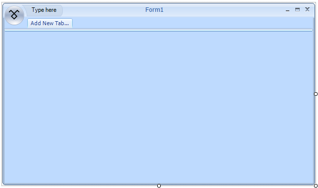
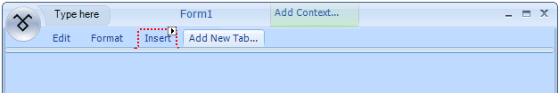
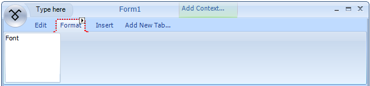
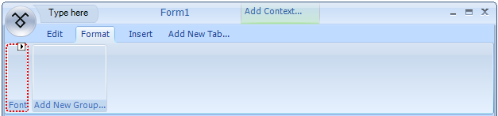
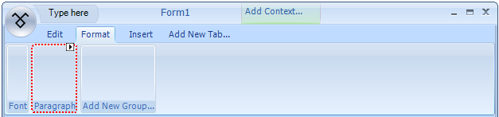
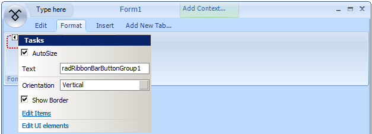
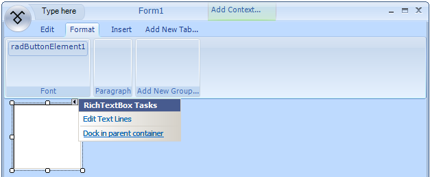

Getting Started
This section will help you in creating your first Telerik RadRibbonBar with some basic functionality (test formatting).
Adding a Telerik RadRibbonBar to your form
Add a new RadRibbonForm to your project or create one by
changing the base class of a standard Form to RadRibbonForm.The RadRibbonForm's designer automatically adds a RadRibbonBar control on the form as shown below:
Adding Tabs to the Telerik RadRibbonBar
Click Add New Tab...
Type Edit and press Enter.
A new Add New Tab... button will be created to the right of the Edit tab:
Add two more TabItems with captions Format and Insert:
Adding Groups to a RadRibbonBar Tab
Click the Format tab.
Click the Add New Group... button to create a new RadRibbonBarGroup.
You will be prompted to enter the Text of the new group. Type Font and press
Enter to confirm the typed Text. Do the whole operation again for another group, but set its Text to
Paragraph. These groups will become containers that you will use to group controls by the type of functionality they have in common:
Adding Controls to a Group
Click the Font group smart tag.
Click on Add Vertical Button Group link. This selection will place a red
highlighted area inside of the Font group:
Click RadRibbonBarButtonGroup1 smart tag.
Click on Edit items link
Select RadButtonElement from the drop down list:

Having done that a RadButtonElement is added to the button group that you have just created in the previous steps.
Formatting a RadButtonElement
Click RadButtonElement1, open its Smart Tag menu.
Open the drop-down menu of the DisplayStyle property and select Image.
Open the drop-down menu of the ImageIndex property and select Italic.
Close the Smart Tag menu.
In the Properties window of RadButtonElement1, change the Name property
from RadButtonElement1 to TextItalic.
Prepare an ImageList to be Used in the Telerik RadRibbonBar
Drag a WinForms ImageList component from the Toolbox to the form.
In the area below the design surface, you will see ImageList1.Using the Images Collection Editor, add images to represent Italic text and Bold
text to the ImageList. For more help with this task, see How to: Add or Remove ImageList Images with the
Designer in the Visual Studio 2005 documentation.In the Properties window of RadRibbonBar1, locate the ImageList property.
Click the drop-down arrow and choose ImageList1 from the drop-down list.
Add a RichTextBox
Drag a standard WinForms RichTextBox control onto the form.
Open the Smart Tag of the control and execute its 'Dock in parent container:
Add the Code
[C#] Make text bold or italic
private void TextBold_Click(object sender, EventArgs e)
{
if (richTextBox1.SelectionFont.Bold)
{
richTextBox1.SelectionFont = new Font(richTextBox1.SelectionFont, richTextBox1.SelectionFont.Style & ~FontStyle.Bold);
}
else
{
richTextBox1.SelectionFont = new Font(richTextBox1.SelectionFont, richTextBox1.SelectionFont.Style | FontStyle.Bold);
}
}
private void TextItalic_Click(object sender, EventArgs e)
{
if (richTextBox1.SelectionFont.Italic)
{
richTextBox1.SelectionFont = new Font(richTextBox1.SelectionFont, richTextBox1.SelectionFont.Style & ~FontStyle.Italic);
}
else
{
richTextBox1.SelectionFont = new Font(richTextBox1.SelectionFont, richTextBox1.SelectionFont.Style | FontStyle.Italic);
}
}
[VB.NET] Make text bold or italic
Private Sub TextBold_Click(ByVal sender As System.Object, ByVal e As System.EventArgs) Handles TextBold.Click
If RichTextBox1.SelectionFont.Bold Then
RichTextBox1.SelectionFont = New Font(RichTextBox1.SelectionFont, RichTextBox1.SelectionFont.Style And Not FontStyle.Bold)
Else
RichTextBox1.SelectionFont = New Font(RichTextBox1.SelectionFont, RichTextBox1.SelectionFont.Style Or FontStyle.Bold)
End If
End Sub
Private Sub TextItalic_Click(ByVal sender As System.Object, ByVal e As System.EventArgs) Handles TextItalic.Click
If RichTextBox1.SelectionFont.Italic Then
RichTextBox1.SelectionFont = New Font(RichTextBox1.SelectionFont, RichTextBox1.SelectionFont.Style And Not FontStyle.Italic)
Else
RichTextBox1.SelectionFont = New Font(RichTextBox1.SelectionFont, RichTextBox1.SelectionFont.Style Or FontStyle.Italic)
End If
End Sub
Additional C# Code Instructions
It is necessary to link the Bold and Italic buttons to their event handler code.
Click the Bold button.
In the Properties window, click the Event code icon
( ).
).Locate the Click Action event and select TextBold_Click from its drop-down list.
Set the Italic button's Click Action to TextItalic_Click in the same manner.
Run the QuickStart
Press F5 to run the QuickStart.
Add some text into the text area.
Highlight some words and click on the B button to change their font to bold. Click the B
button again to remove the bold formatting.